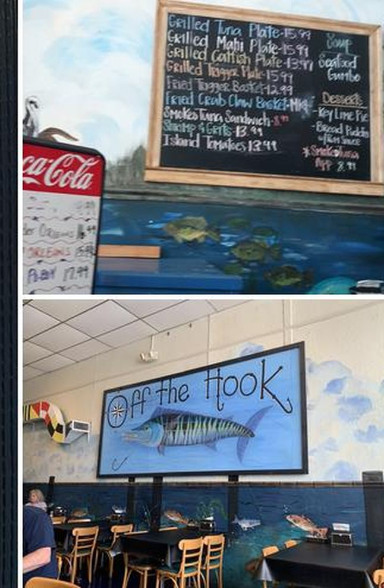

Fried seafood you can actually eat
OFF the Hook runs a dedicated gluten-free fryer, so the fried seafood is gluten free. Fried shrimp, fried fish, fried crab claws: the same baskets as everyone else’s, cooked in their own fryer.
Celiac diners come here because they don’t have to watch from the sidelines while the table shares fried seafood. Call ahead if you have questions about a specific dish; the staff handles gluten-free questions every day.
Call (228) 762-9004
Order it like everyone else does
Same menu, same fryer
The fried items on the menu and the chalkboard are the gluten-free fried items. One dedicated fryer, no separate menu to decode.
Takeout counts too
Call (228) 762-9004 and your gluten-free fried seafood is boxed up for takeout. Delivery is available as well.
Ask the staff
They answer gluten-free questions all day. If you need to check a dish before ordering, just ask.